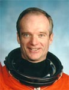

Lyndon B. Johnson Space Center
Houston, Texas 77058
|
National Aeronautics and Space Administration Lyndon B. Johnson Space Center Houston, Texas 77058 |
 |
Biographical Data |
||
Charles J. Precourt (Colonel, USAF, Ret.)
NASA ASTRONAUT (FORMER)
PERSONAL DATA: Born June 29, 1955, in Waltham, Massachusetts, but considers Hudson, Massachusetts, to be his hometown. Married to the former Lynne Denise Mungle of St. Charles, Missouri. They have three daughters, Michelle, Sarah, and Aimee. Precourt enjoys golf and flying light aircraft. He flies a Varieze, an experimental aircraft that he built. His parents, Charles and Helen Precourt, reside in Hudson. Her mother, Jerry Mungle, resides in Pearland, Texas.
EDUCATION: Graduated from Hudson High School, Hudson, Massachusetts, in 1973; received a bachelor of science degree in aeronautical engineering from the United States Air Force Academy in 1977, a master of science degree in engineering management from Golden Gate University in 1988, and a master of arts degree in national security affairs and strategic studies from the United States Naval War College in 1990. While at the United States Air Force Academy, Precourt also attended the French Air Force Academy in 1976 as part of an exchange program. Fluent in French and Russian.
ORGANIZATIONS: Vice President of the Association of Space Explorers; Associate Fellow of the Society of Experimental Test Pilots (SETP), and member of the Experimental Aircraft Association.
SPECIAL HONORS: Military decorations include: the Legion of Merit, the Defense Superior Service Medal (2); the Distinguished Flying Cross and the Air Force Meritorious Service Medal (2). Distinguished graduate of the United States Air Force Academy and the United States Naval War College. In 1978 he was the Air Training Command Trophy Winner as the outstanding graduate of his pilot training class. In 1989 he was recipient of the David B. Barnes Award as the Outstanding Instructor Pilot at the United States Air Force Test Pilot School. NASA awards include: the NASA Distinguished Service Medal; the Exceptional Service Medal and Outstanding Leadership Medal; and the NASA Space Flight Medal (4).
EXPERIENCE: Precourt graduated from Undergraduate Pilot Training at Reese Air Force Base, Texas, in 1978. Initially he flew as an instructor pilot in the T-37, and later as a maintenance test pilot in the T-37 and T-38 aircraft. From 1982 through 1984, he flew an operational tour in the F-15 Eagle at Bitburg Air Base in Germany. In 1985 he attended the United States Air Force Test Pilot School at Edwards Air Force Base in California. Upon graduation, Precourt was assigned as a test pilot at Edwards, where he flew the F-15E, F-4, A-7, and A-37 aircraft until mid 1989, when he began studies at the United States Naval War College in Newport, Rhode Island. Upon graduation from the War College, Precourt joined the astronaut program. His flight experience includes over 7,500 hours in over 60 types of civil and military aircraft. He holds commercial pilot, multi-engine instrument, glider and certified flight instructor ratings. Precourt retired from the Air Force on March 31, 2000.
NASA EXPERIENCE: Selected by NASA in January 1990, Precourt became an astronaut in July 1991. His other technical assignments to date have included: Manager of ascent, entry, and launch abort issues for the Astronaut Office Operations Development Branch; spacecraft communicator (CAPCOM), providing the voice link from the Mission Control Center during launch and entry for several Space Shuttle missions; Director of Operations for NASA at the Gagarin Cosmonaut Training Center in Star City, Russia, from October 1995 to April 1996, with responsibility for the coordination and implementation of mission operations activities in the Moscow region for the joint U.S./Russian Shuttle/Mir program. From May 1996 to September 1998, he served as Acting Assistant Director (Technical), Johnson Space Center. From October 1998 through November 2002, Precourt was Chief of the Astronaut Corps, responsible for the mission preparation activities of all space shuttle and future International Space Station crews and their support personnel. In his final assignment he was the Deputy Manager for the International Space Station, responsible for the day-to-day management of ISS operations, on orbit assembly and the interfaces with NASA contractors and the International Partners. A veteran of four space flights, he has logged over 932 hours in space. He served as a mission specialist on STS-55 (April 26 to May 6, 1993), was the pilot on STS-71 (June 27 to July 7, 1995), and was the spacecraft commander on STS-84 (May 15-24, 1997) and STS-91 (June 2-12, 1998), the final scheduled Shuttle-Mir docking mission, concluding the joint U.S./Russian Phase I Program. Precourt left NASA in March 2005 and is now working for Thiokol in Utah.
SPACE FLIGHT EXPERIENCE: STS-55 Columbia launched from Kennedy Space Center, Florida, on April 26, 1993. Nearly 90 experiments were conducted during this German-sponsored Spacelab D-2 mission to investigate life sciences, materials sciences, physics, robotics, astronomy and the Earth and its atmosphere. STS-55 also flew the Shuttle Amateur Radio Experiment (SAREX) making contact with students in 14 schools around the world. After 160 orbits of the earth in 240 flight hours, the 10-day mission concluded with a landing on Runway 22 at Edwards Air Force Base, California, on May 6, 1993.
STS-71 (June 27 to July 7, 1995) was the first Space Shuttle mission to dock with the Russian Space Station Mir, and involved an exchange of crews (seven-member crew at launch, eight-member crew on return). The Atlantis Space Shuttle was modified to carry a docking system compatible with the Russian Mir Space Station. It also carried a Spacehab module in the payload bay in which the crew performed various life sciences experiments and data collections. STS-71 Atlantis launched from and returned to land at the Kennedy Space Center, Florida. Mission duration was 235 hours, 23 minutes.
STS-84 Atlantis (May 15-24, 1997) carried a seven-member international crew. This was NASA’s sixth Shuttle mission to rendezvous and dock with the Russian Space Station Mir. During the 9-day flight, the crew conducted a number of secondary experiments and transferred nearly 4 tons of supplies and experiment equipment between the Space Shuttle and the Mir station. STS-84 Atlantis launched from and returned to land at the Kennedy Space Center, Florida. Mission duration was 221 hours and 20 minutes.
STS-91 Discovery (June 2-12, 1998) was the 9th and final Shuttle-Mir docking mission and marked the conclusion of the highly successful joint U.S./Russian Phase I Program. The crew, including a Russian cosmonaut, performed logistics and hardware resupply of the Mir during four docked days. They also conducted the Alpha Magnetic Spectrometer experiment, which involved the first of its kind research of antimatter in space. Mission duration was 235 hours, 54 minutes.
MARCH 2005
{kind=link}